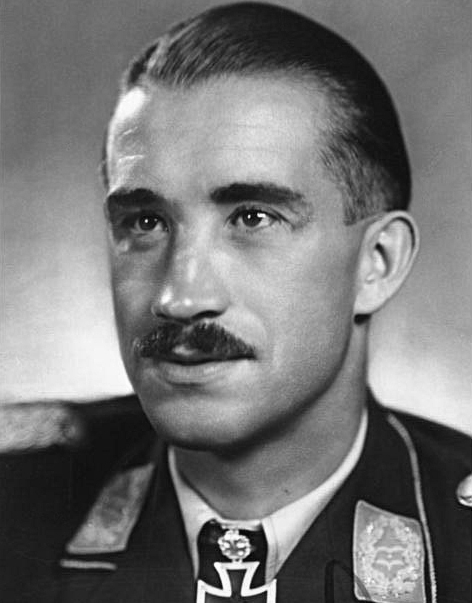
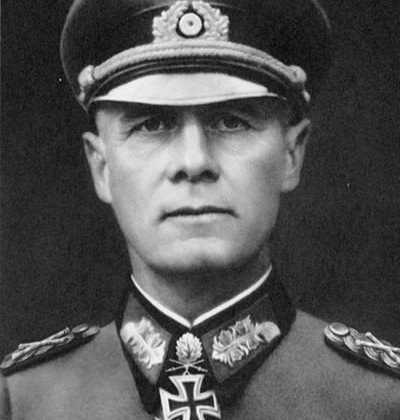
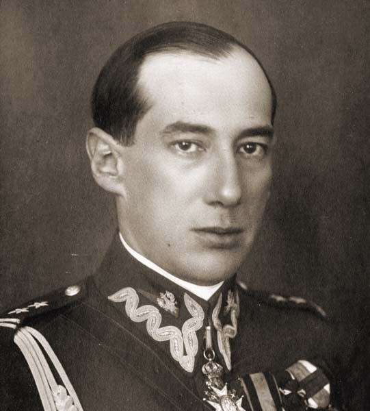
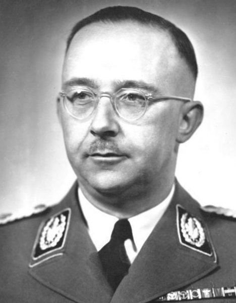

Adolf Galland  Adolf Galland to niemiecki As Przestworzy Luftwaffe. Jeden z najlepszych niemieckich lotników i jeden z niewielu, którzy przeżyli wojnę. Żył od 19 marca 1912 do 9 lutego 1996 (83 lata) Generał Luftwaffe, pilot Messerschmitta Bf 109. Przypisuje się mu zestrzelenie 104 maszyn aliantów. 96 z nich zniszczył od początku wojny do listopada 1941, kiedy awansował na pozycję General der Jagdflieger i miał zakaz przeprowadzania lotów ofensywnych z obawy o życie tak wysokiego oficera. Do lotów myśliwskich został przywrócony w marcu 1945 roku Sam Galland w trakcie Bitwy o Anglię zestrzelił 58 samolotów, dopóki w końcu jego Bf 109 nie został trafiony przez polskiego pilota, podporucznika Bolesława Drobińskiego ze słynnego Dywizjonu 303. Galland jednak przeżył i siał zniszczenie wśród aliantów do końca wojny. 14 maja 1945 został aresztowany i przesłuchiwany przez RAF. 28 kwietnia 1947 wypuszczono go z aresztu i uciekł do Argentyny, gdzie spędził 8 lat i został odznaczony tytułem honorowego pilota militarnego Argentyny. Napisał swoją autobiografię, wydaną w 1954 roku - Die Ersten und die Letzten (Pierwsi i ostatni), sprzedało się aż 3 miliony kopii w 14 różnych językach.
Wielka Trójka Wielka Trójka to spopularyzowane określenie na przywódców trzech największych potęg alianckich drugiej wojny światowej Grupa ta spotkała się dwukrotnie - podczas konferencji w Teheranie i w Poczdamie W skład Wielkiej Trójki wchodzili: Józef Stalin - ZSRR - jedyny stały członek tej grupy Franklin Delano Roosevelt - USA - tylko podczas konferencji w Teheranie, zmarł 12 kwietnia 1945. W Poczdamie zastąpiony przez Harry'ego Trumana Winston Churchill - Wielka Brytania - w drugiej fazie konferencji w Poczdamie zastąpiony przez Clementa Attlee, z powodu przegranej konserwatystów w Izbie Gmin Podczas konferencji kairskiej, w 1943r., stworzyła się inna Wielka Trójka, w której skład wchodzili ci sami ludzie, z wyjątkiem zastąpienia Stalina, generalissimusem Chin - Chiang Kai-Shekiem
Erwin Rommel  Feldmarszałek Erwin Rommel, znany szerzej jako Lis Pustyni,to dowódca legendarnego oddziału Wehrmachtu - Afrika Korps Żył od 15 listopada 1891 – 14 października 1944. Popełnił samobójstwo, po nieudanym zamachu na Adolfa Hitlera, poprzez zażycie kaspułki z cyjankiem. Dowódca 7 Dywizji Pancernej podczas inwazji na Francję Jeden z jego szerzej znanych cytatów to "wojna bez nienawiści", co przeczy jego rzeczywistemu zachowaniu - popełniał masę zbrodni wojennych, względem nieświadomych konfiktu członków afrykańskich plemieni Kawaler Krzyża Rycerskiego z Liśćmi Dębowymi, Mieczami i Brylantami, odznaczony po przegranej II Bitwie pod El Alamein. Pierwszy członek sił lądowych odznaczony tym orderem.
Józef Beck  Józef Beck to Minister Spraw Zagranicznych Polski, podczas wybuchu II Wojny Światowej Żył od 4 października 1894 do 5 czerwca 1944 Ściśle związany z Józefem Piłsudskim, był wicepremierem w jego rządzie i wsparł go podczas zamachu majowego Znany z jego wypowiedzi "My w Polsce nie znamy pojęcia pokoju za wszelką cenę.", wygłoszonej poprzez radio, po niemieckich pretensjach do posiadania Wolnego Miasta Gdańsk. Po wybuchu wojny internowany do Rumunii, gdzie zmarł w Stănești. Walczył w Legionach Polskich podczas I Wojny Światowej i odznaczony został orderem Virtutti Militari Imię Józef, nosi jako trzeci w kolejności, zaraz po dziadku i ojcu. Za życia odznaczony został 48 odznaczeniami z 20 różnych krajów Jest honorowym obywatelem miasta Kielce
Heinrich Himmler  Heinrich Himmler to szef partii NSDAP, Reichsführer-SS (Dowódca SS) oraz główna osoba stojąca za holokaustem. Prawa ręka Adolfa Hitlera Żył od 7 października 1900 do 23 maja 1945 Dołączył do partii nazistowskiej w 1923r., a do SS w 1925. Po 4 latach był już szefem tejże organizacji Znany z jego wysokich umiejętności organizacji i wyboru dobrych i kompetentnych podwładnych Założył Einsatzgruppen i kazał wybudować obozy koncentracyjne. Przypisuje mu się śmierć aż do 14 milionów osób, z czego 6 milionów to Żydzi, 200-500 tys. to Romowie. Jego ofiary to głównie Polacy i obywatele Związku Radzieckiego 21 czerwca 1944, po nieudanej próbie zamachu na Hitlera, sformował grupę, która aresztowała 5000 podejrzanych oraz znanych przeciwników reżimu. Prawie wszyscy zostali zabici. 23 kwietnia 1945 w Lubece (Lübeck) spotkał się z Folke Bernadotte, głową szwedzkiego czerwonego krzyża. Reprezentował się jako przywódcę Niemiec i powiedział, że poddadzą się zachodnim Aliantom, ale nie ZSRR, z nadzieją, że Brytyjczycy i Amerykanie pomogą walczyć resztce Wehrmachtu ze Związkiem Radzieckim 23 maja 1945 został zatrzymany i przesłuchiwany przez Brytyjczyków, kiedy lekarz chciał przeprowadzić bilans medyczny, Himmler przegryzł ukrytą w ustach tabletkę z cyjankiem i umarł po 15 minutach.